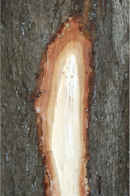
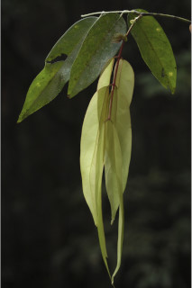
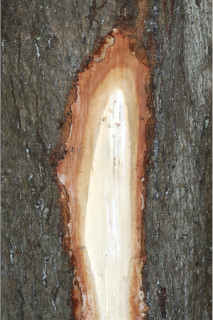
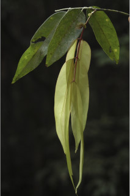

Trees up to 10 m tall.
10 ಮೀ. ಎತ್ತರದವರೆಗೆ ಬೆಳೆಯುವ ಮರಗಳು.
10 മീറ്റര് വരെ ഉയരത്തില് വളരുന്ന മരങ്ങള്.
மரம் 10 மீ. உயரம் வரை வளரக்கூடியது
Bark dark brown, shallowly fissured; blaze light brown.
ಕಾಂಡ ಕಡು ಕಂದು ಬಣ್ಣ ಹೊಂದಿದ್ದು ಆಳವಿಲ್ಲದ ಸೀಳಿಕಾ ಮಾದರಿಯಲ್ಲಿದ್ದು, ಕಚ್ಚು ಮಾಡಿದ ಜಾಗ ನಸು- ಕಂದು ಬಣ್ಣದಲ್ಲಿರುತ್ತದೆ
ആഴമില്ലാതെ വിുകീറിയ, കടും തവിട്ട് നിറത്തിലുള്ള പുറംതൊലി; വെട്ട്പാടിന് ഇളം തവിട്ട് നിറം.
மரத்தின் பட்டை அடர்ந்த அரக்கு நிறம், மெலிதான பிளவு கொண்டது; பட்டையின் உள்புறம் பளபளப்பான வெளிறிய அரக்கு நிறம்
Branchlets terete, glabrous.
ಎಲೆಗಳು ಸಮಸಂಖ್ಯಾ ಗರಿರೂಪಿ ಸಂಯುಕ್ತ ಮಾದರಿಯಲ್ಲಿದ್ದು ಪರ್ಯಾಯ ಜೋಡನಾ ವ್ಯವಸ್ಥೆಯಲ್ಲಿದ್ದು ಕಾಂಡದ ಎರಡೂ ಕಡೆಯ ಎದುರು ಬದರಿನ ಲಂಬ ಸಾಲಿನಲ್ಲಿರುತ್ತವೆ; ಕಾವಿನೆಲೆಗಳು ಜೋಡಿಗಳಾಗಿದ್ದು, ಎಲೆಯನ್ನು ಹೋಲುವಂತಿದ್ದು 4 x 1.5 ಸೆ.ಮೀ. ಗಾತ್ರದಲ್ಲಿದ್ದು, ಇಕ್ಕಟ್ಟಾದ ಅಂಡಾಕಾರ ಹೊಂದಿದ್ದು ಕ್ರಮೇಣ ಚೂಪಾಗುವ ತುದಿಯನ್ನು ಹೊಂದಿರುತ್ತವೆ, ಬುಡದಲ್ಲಿ ವಿಶಾಲವಾದ ಮೂತ್ರಕೋಶ ಮಾದರಿಯ ಉಪಾಂಗ ಇರುತ್ತದೆ; ಅಕ್ಷದಿಂಡು ಉಬ್ಬಿದ ಬುಡಸಮೇತವಿರುತ್ತದೆ ಹಾಗೂ 5 ರಿಂದ 13.5 ಉದ್ದ ಹೊಂದಿರುತ್ತದೆ. ತುಸುವಾದ ರೆಕ್ಕೆ ಪಡೆದಿರುವುದನ್ನು ಬಿಟ್ಟರೆ ಆಕಾರದಲ್ಲಿ ದುಂಡಾಗಿರುತ್ತದೆ; ಕಿರು ಎಲೆಗಳ ತೊಟ್ಟು 0.5 ರಿಂದ 0.8 ಸೆ.ಮೀ. ಉದ್ದ ಹೊಂದಿರುತ್ತದೆ; ಕಿರು ಎಲೆಗಳು 3 ಜೋಡಿಗಳಿದ್ದು ಅಭಿಮುಖಿ ಅಥವಾ ಉಪ-ಅಭಿಮುಖಿಗಳಾಗಿರುತ್ತವೆ, ಸಾಮಾನ್ಯವಾಗಿ ಕೆಳಗಿನ ಜೋಡಿ ಮೇಲಿನ ಜೋಡಿಗಿಂತ ಕೊಂಚ ಸಣ್ಣಗಾತ್ರವನ್ನು ಹೊಂದಿರುತ್ತದೆ, ಪತ್ರ 9–25 x 2.5–7 ಸೆ.ಮೀ. ಗಾತ್ರದಲ್ಲಿದಲ್ಲಿದು ಇಕ್ಕಟ್ಟಾದ ಅಂಡ - ವೃತ್ತ ಅಥವಾ ಭರ್ಜಿಯಾಕಾರ ಹೊಂದಿರುತ್ತದೆ, ಕಿರು ಎಲೆಗಳ ತುದಿ ಅನುಕ್ರಮವಾಗಿ ಕ್ರಮೇಣ ಚೂಪಾಗುವ ಮಾದರಿಯಲ್ಲಿದ್ದು, ಬುಡ ಚೂಪಾಗಿರುತ್ತದೆ, ಅಂಚು ನಯವಾಗಿರುತ್ತದೆ, ಕಿರು ಎಲೆಗಳು ಕಾಗದವನ್ನೋಲುವ ಅಥವಾ ತೊಗಲನ್ನೋಲುವ ಮಾದರಿಯಲ್ಲಿದ್ದು ರೋಮರಹಿತವಾಗಿರುತ್ತವೆ; ಮಧ್ಯನಾಳ ಪತ್ರದ ಮೇಲ್ಭಾಗದಲ್ಲಿ ಚಪ್ಪಟೆಯಾಗಿರುತ್ತದೆ; ಎರಡನೇ ದರ್ಜೆಯ ನಾಳಗಳು 9–13 ಜೋಡಿಗಳಿದ್ದು ತುದಿಯ ಕಡೆಗೆ ಮೇಲೇರುವಂತಿರುತ್ತವೆ; ಮೂರನೇ ದರ್ಜೆಯ ನಾಳಗಳು ಜಾಲಬಂಧ ನಾಳ ವಿನ್ಯಾಸದಲ್ಲಿರುತ್ತವೆ.
അരോമിലവും ഉരുതുമായ ഉപശാഖകള്.
சிறிய நுனிக்கிளைகள் குறுக்குவெட்டுத் தோற்றத்தில் வளையமானது, உரோமங்களற்றது.
Leaves compound, paripinnate, alternate, distichous; stipules in pairs, foliaceous, to 4 x 1.5 cm, narrow ovate, acuminate, with basal broad reniform appendage; rachis pulvinate, 5-13.5 cm long, slightly winged, otherwise terete; petiolule 0.5-0.8 cm long; leaflets 3 pairs, opposite or subopposite, usually lower pair slightly smaller than upper, lamina 9-25 x 2.5-7 cm, narrow elliptic or lanceolate, apex gradually long acuminate, base acute, margin entire, chartaceous to coriaceous, glabrous; midrib flat above; secondary_nerves 9-13 pairs, ascending towards apex; tertiary_nerves reticulate.
ಹೂಗಳು ಶ್ವೇತ ಬಣ್ಣದಲ್ಲಿದ್ದು, ಕಂದು ಮಿಶ್ರಿತ ಹಳದಿ ಬಣ್ಣದ ಮಖಮಲ್ಲಿನಿಂದ ಆವೃತವಾದ ಅಕ್ಷಾಕಂಕುಳಿನಲ್ಲಿರುವ ಮಧ್ಯಾಭಿಸರ ಪುಷ್ಪಮಂಜರಿಯಲ್ಲಿರುತ್ತವೆ.
ഏകാന്തരക്രമത്തില്, തിന്റെ തുഭാഗത്ത് മാത്രയടുക്കിയ വിധത്തിലുള്ള, സമപിച്ഛക, ബഹുപത്രങ്ങള്, കീഴ്ഭാഗത്ത്, വീതിയേറിയ, വൃത്താകാരത്തിലുള്ള അംഗത്തോടുകൂടിയ, പത്രസമാനമായതും, 4 സെ.മി വരെ നീളവും 1.5സെ.മി വരെ വീതിയുള്ളതുമായ, വീതികുറഞ്ഞ അണ്ഡാകാരവും വാലോട് കൂടിയതുമായ അനുപര്ണ്ണങ്ങള് ജോഡികളായി കാണപ്പെടുന്നു; ബഹുപത്രകം പത്രവൃന്തങ്ങളും തല്പത്തോടു കൂടിയതും ഉം 5 സെ.മി മുതല് 13.6 സെ.മി വരെ നീളവും, നേര്ത്ത ചിറകോട് കൂടിയതുമാണ്, അല്ലെങ്കില് ഉരുതായിരിക്കും; പത്രകവൃന്തത്തിന് 0.5 സെ.മി മുതല് 8.0 സെ.മി വരെ നിളം; സമ്മുഖമോ ഉപസമ്മുഖമോ ആയ 3 ജോഡി പത്രകങ്ങള്, സാധാരണയായി താഴത്തെ ജോഡി മുകളിലത്തേതിനേക്കാള് അല്പ്പം ചെറുതാണ്, പത്രഫലകത്തിന് 9 സെ.മി മുതല് 25 സെ.മി വരെ നിളവും 2.5 സെ.മി മതല് 7 സെ.മി വരെ വീതിയും, വീതികുറഞ്ഞ ദീര്ഘനീത്തിയമോ കുന്താകൃതിയോ, പത്രാഗ്രം പതിഞ്ഞ നീ വാലോടുകീടിയതും, കൂര്ത്ത പത്രാധിരത്തോടെയുമാണ്, അവിഭജിതം, കടലാസ് പോലത്തെ പ്രകൃതം തൊട്ട് ചര്മ്മില പ്രകൃതം വരെയും, അരോമിലം; മുകളില് പരന്നിരിക്കുന്ന മുഖ്യസിര; അഗ്രത്തോടുത്ത് ആരോഹണത്തില് പോകുന്ന, 9 മുതല് 13 വരെ ജോഡി ദ്വിതീയ ഞരമ്പുകള്; ജാലിക തീര്ക്കുന്ന ത്രിതീയ ഞരമ്പുകള്..
கூட்டிலை, இரட்டைபடை சிறகுவடிவக்கூட்டிலை (பேரிபின்னேட்), மாற்றுஅடுக்கமானவை, இருநெடுக்கு வரிசையிலையடுக்கம் (டைஸ்டிக்கஸ்); இலையடிச்செதில் ஒரு ஜோடி, இலைபோன்று இருக்கும், 4 X 1.5 செ.மீ., குறுகிய முட்டை வடிவம், அலகின் நுனி வால் போன்று கூரிய நுனி மற்றும் அலகின் தளம் சிறுநீரக வடிவானது; இலைக்காம்பு பல்வினேட், 5-13.5 செ.மீ. நீளமானது, சிறிது இறகு போன்றது, வளையமானது; சிற்றிலைக்காம்பு 0.5-0.8 செ.மீ. நீளமானது; சிற்றிலைகள் 3 ஜோடிகள், எதிரானது அல்லது சிறிது எதிரானது, அடியில் உள்ள ஜோடி சிற்றிலைகள் மற்றவைகளை விட சிறியது, இலை அலகு 9-25 X 2.5-7 செ.மீ., குறுகிய நீள்வட்டம் அல்லது ஈட்டி வடிவம், அலகின் நுனி சிறிது சிறிதாக குறுகி அதிக்கூரியது, அலகின் தளம் கூரியது, அலகின் விளிம்பு முழுமையானது, சார்ட்டேசியஸ் முதல் கோரியேசியஸ், உரோமங்களற்றது; மையநரம்பு மேற்பரப்பில் மையநரம்பு மேற்புறத்தில் அலகின் பரப்பிற்கு சமமானது; இரண்டாம் நிலை நரம்புகள் 9-13 ஜோடிகள்; மூன்றாம் நிலை நரம்புகள் வலைப்பின்னல் அமைப்பு கொண்டது.
Flowers white, in axillary racemes, tawny velvety.
ಪಾಡುಗಳು 20 ಸೆ.ಮೀ.ವರೆಗಿನ ಉದ್ದ ಹೊಂದಿದ್ದು ತೆಳು ಹಾಗೂ ಚಪ್ಪಟೆಯಾಗಿದ್ದು ಕಂದು ಮಿಶ್ರಿತ ಹಳದಿ ಬಣ್ಣದ ಮೃದು ತುಪ್ಪಳದಿಂದ ಆವೃತವಾಗಿರುತ್ತವೆ ಹಾಗೂ 4 ಬೀಜಗಳನ್ನೊಳಗೊಂಡಿರುತ್ತವೆ.
കൊഴുത്ത വെല്വെറ്റ് രോമാവൃതമായ, വെളുത്ത പൂക്കള്, കക്ഷീയ റസീം പൂങ്കുലകള്.
மலர்கள் வெள்ளை நிறம், இலைக்கோணங்களில் அமைந்த ரெசீம், ஆரஞ்சு ப்ரவுன் வெல்வெட்.
Pod flat, thin, tawny pubescent, to 20 cm long; 4-seeded.
കായ, 20 സെ.മി വരെ നീളമുള്ളതും, കപില വര്ണ്ണ രോമിലമായതും, കനംകുറഞ്ഞതും പരന്നതുമായ പോഡ് ആണ്; 4 വിത്തുകള് വീതം.
தட்டையான பாட் கனி (அவரைப்போன்றது), ஆரஞ்சு ப்ரவுன் நிறமான மென்உரோமங்கள் உடையது, 20 செ.மீ. நீளமானது; 4 விதைகள்.
 


